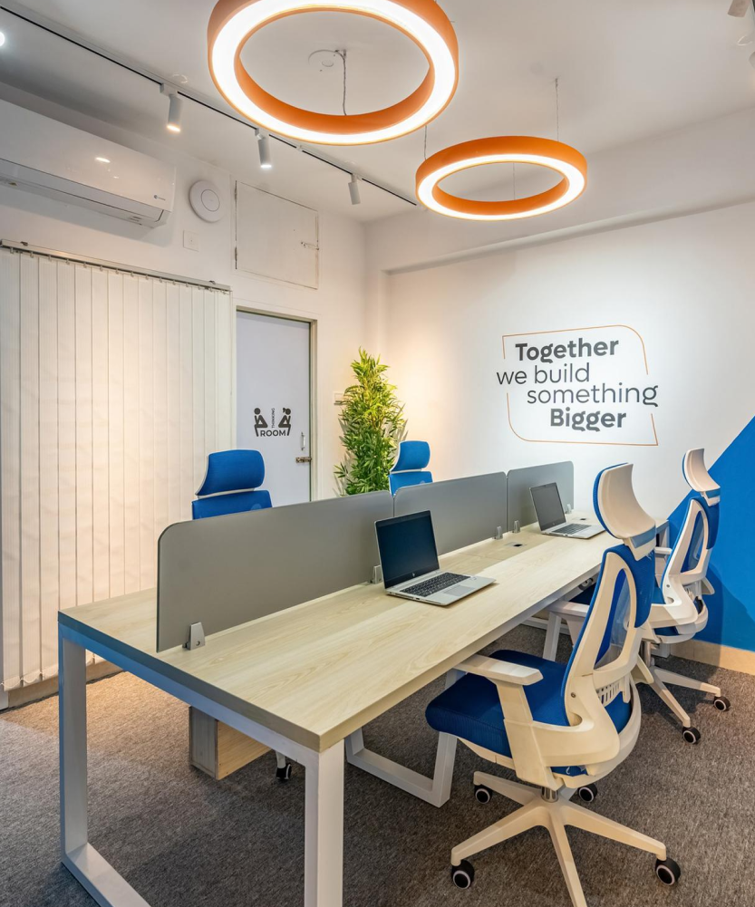

01
Creative Excellence
Every interface, typographic hierarchy, and visual micro-detail is crafted with obsessive intention, aiming for distinctive aesthetics, polish, and commercial conversion.
Customer satisfaction rate, reflecting our dedication and craft
Years of engineering and digital product innovation
Scalable platforms, web apps, and design systems launched
Global users engaged across our clients' digital solutions
Whether starting fresh or scaling up, we transform your vision into bold creativity. Combining UX research, human-centered design, and scalable engineering, we help visionary founders build products people love and trust.

Designed for deep focus, creative collaboration & product breakthroughs.
Driven by relentless curiosity, craftsmanship, and shared ambition.
From the first page structure to the final responsive experience, we design websites around how people discover, evaluate and trust your company.
Define the page architecture, narrative and priorities around business goals and user intent.
Design complete websites for SaaS, AI and technology companies across multiple pages and use cases.
Create clear journeys, CTA hierarchy and content structure that help visitors move toward the right action.
Design layouts, typography and interaction behavior that work naturally across screen sizes.
Turn complex products, workflows and technical value into clear visual communication.
Use purposeful animation and micro-interactions to reinforce hierarchy, product understanding and brand character.
Every interface we design, line of code we ship, and client collaboration we undertake is guided by an uncompromising commitment to quality, integrity, and user respect.
Every interface, typographic hierarchy, and visual micro-detail is crafted with obsessive intention, aiming for distinctive aesthetics, polish, and commercial conversion.
Every pixel, user flow, and technical architectural decision serves a verified business objective. We balance boundless creative ambition with practical clarity.
We integrate seamlessly as an extension of your founding and engineering team. Shared ownership, transparent communication, and genuine alignment on outcomes.
We embrace modern AI paradigms and emerging technology with relentless curiosity, shipping robust products with speed, rigor, and zero complacency.
Honest critiques, clear roadmaps, predictable sprint timelines, and zero guesswork. We build lasting trust by delivering precisely what we commit to.
Great software doesn't just solve functional utility—it creates delight. We design for the real human beings interacting with your product every day.